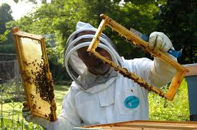

Bee Keeping in Saskatchewan
The migration of honeybees into Saskatchewan coincides with the coming of the first settlers from eastern Canada and the United States. The first records of honeybees in the province date back to 1900. By 1922, there were about 85 beekeepers who produced 24,000 pounds of honey. Most of these beekeepers were located in the southern and eastern parts of the province. Interest in producing honey was aroused at this time by a growing demand as well as by increasing prices for honey, due in part, by shortages and high prices of sugar which occurred during and immediately after World War 1.
The Saskatchewan Beekeepers Association was organized in 1923 with John Hubbard of Grenfell as the first president and Thomas Mack of Lumsden as the first vice-president. Hubbard held the first organized beekeeper meeting in 1920 at his apiary in Grenfell, assisted by Robert Hamilton of Aylsham. Organized research and extension work in beekeeping had its beginning at the University of Saskatchewan in 1923 under the direction of Dr. C.F. Patterson, head of the Horticulture Department.